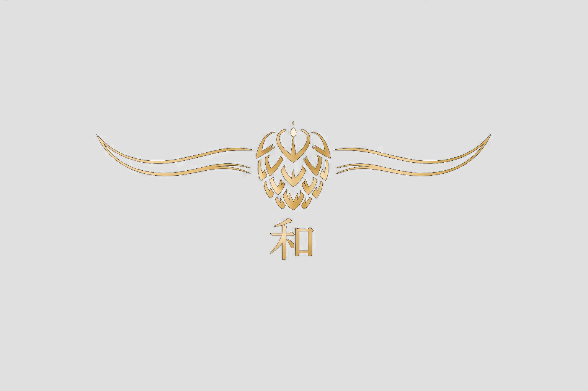

Hallertau WagyuExklusives Wagyu
aus der Hallertau
Regional. Nachhaltig. Mit Fokus auf Tierwohl, Ruhe und höchste Fleischqualität.
Unser Betrieb
Wir betreiben eine Wagyu-Mutterkuhhaltung in der Hallertau. Im Mittelpunkt stehen für uns Tierwohl, eine stressarme Aufzucht und eine naturnahe Haltung.
Hallertau Wagyu steht für einen kleinen, persönlichen Betrieb mit klarer Haltung – ruhig, bodenständig und mit Blick auf das Wesentliche.
Tierwohl
Unsere Tiere wachsen in einer ruhigen Umgebung mit Weidegang und viel Sorgfalt auf.
Wagyu
Wagyu steht für besondere Fleischqualität, feine Marmorierung und eine hochwertige Aufzucht.
Verantwortung
Gesunde Tiere, nachhaltige Bewirtschaftung und ein ehrlicher Auftritt nach außen.
Fleischverkauf
Informationen zu verfügbarem Wagyu-Fleisch und Kontakt zur Anfrage finden Sie auf unserer Fleischverkaufsseite.
Mehr erfahrenKontakt
Sie haben Fragen zu unserem Betrieb oder zum Fleischverkauf? Wir freuen uns über Ihre Kontaktaufnahme.
Hallertau Wagyu · Robert Riedmaier
Brünnlweg 7 · 85405 Nandlstadt
+49 8756 8664014
info@hallertau-wagyu.de